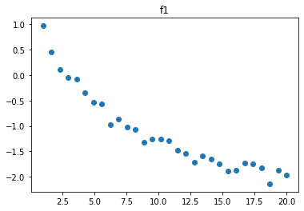
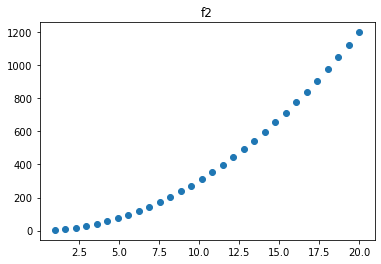
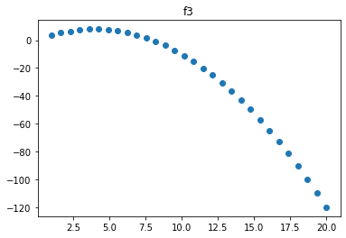

Learning functions
Contents
Learning functions¶
try:
# in colab
import google.colab
print('In colab, downloading LOTlib3')
!git clone https://github.com/piantado/LOTlib3
except:
# not in colab
print('Not in colab!')
Not in colab!
Imports¶
First we need to import a bunch of stuff:
import numpy as np
from pprint import pprint
import matplotlib.pyplot as plt
from LOTlib3.Miscellaneous import q, random, Infinity
from LOTlib3.Grammar import Grammar
from LOTlib3.DataAndObjects import FunctionData, Obj
from LOTlib3.Hypotheses.LOTHypothesis import LOTHypothesis
from LOTlib3.Hypotheses.Likelihoods.BinaryLikelihood import BinaryLikelihood
from LOTlib3.Eval import primitive
from LOTlib3.Miscellaneous import qq
from LOTlib3.TopN import TopN
from LOTlib3.Samplers.MetropolisHastings import MetropolisHastingsSampler
from math import log
The task¶
The aim here is to define a language that recovers the explicit form for a mathematical function most likely to have generated a certain set of input-output pairs.
For instance, to start with we might want: addition, product, power, log, exp.
If we want to make it fancier, we can add recursion up to a level (which allows us to do e.g. series)
AIMS
Pick a set of mathematical primitives that seem likely
Define a grammar
Define likelihood, e.g., sum of squares minimization
Run inference algo on the example datasets below!
Copying data from other notebook:
f1 = np.array([
[ 1. , 0.96693628],
[ 1.65517241, 0.44488931],
[ 2.31034483, 0.11111997],
[ 2.96551724, -0.05388751],
[ 3.62068966, -0.08770159],
[ 4.27586207, -0.34701368],
[ 4.93103448, -0.5312597 ],
[ 5.5862069 , -0.56654964],
[ 6.24137931, -0.98309806],
[ 6.89655172, -0.87024759],
[ 7.55172414, -1.02468311],
[ 8.20689655, -1.07690071],
[ 8.86206897, -1.3229659 ],
[ 9.51724138, -1.26628302],
[10.17241379, -1.26076366],
[10.82758621, -1.29232939],
[11.48275862, -1.47545188],
[12.13793103, -1.53730544],
[12.79310345, -1.72121669],
[13.44827586, -1.59430107],
[14.10344828, -1.6440229 ],
[14.75862069, -1.74346587],
[15.4137931 , -1.89063419],
[16.06896552, -1.87860771],
[16.72413793, -1.73337155],
[17.37931034, -1.74285824],
[18.03448276, -1.82462328],
[18.68965517, -2.13664592],
[19.34482759, -1.87158473],
[20. , -1.96221768]
])
f2 = np.array([
[1.00000000e+00, 3.71191585e+00],
[1.65517241e+00, 9.24602588e+00],
[2.31034483e+00, 1.71111810e+01],
[2.96551724e+00, 2.74461376e+01],
[3.62068966e+00, 4.04248405e+01],
[4.27586207e+00, 5.58883272e+01],
[4.93103448e+00, 7.39602616e+01],
[5.58620690e+00, 9.45716098e+01],
[6.24137931e+00, 1.17768463e+02],
[6.89655172e+00, 1.43745608e+02],
[7.55172414e+00, 1.72014815e+02],
[8.20689655e+00, 2.03113066e+02],
[8.86206897e+00, 2.36586296e+02],
[9.51724138e+00, 2.72592478e+02],
[1.01724138e+01, 3.11500578e+02],
[1.08275862e+01, 3.52680831e+02],
[1.14827586e+01, 3.96347343e+02],
[1.21379310e+01, 4.42937224e+02],
[1.27931034e+01, 4.91952665e+02],
[1.34482759e+01, 5.43415913e+02],
[1.41034483e+01, 5.97790718e+02],
[1.47586207e+01, 6.54449584e+02],
[1.54137931e+01, 7.13693393e+02],
[1.60689655e+01, 7.75636386e+02],
[1.67241379e+01, 8.39996211e+02],
[1.73793103e+01, 9.07024122e+02],
[1.80344828e+01, 9.76727694e+02],
[1.86896552e+01, 1.04889184e+03],
[1.93448276e+01, 1.12381860e+03],
[2.00000000e+01, 1.20102847e+03]
])
f3 = np.array([
[ 1. , 3.4938151 ],
[ 1.65517241, 5.44628788],
[ 2.31034483, 6.53998577],
[ 2.96551724, 7.67421996],
[ 3.62068966, 7.89516258],
[ 4.27586207, 8.02252067],
[ 4.93103448, 7.55957521],
[ 5.5862069 , 6.68554562],
[ 6.24137931, 5.49661335],
[ 6.89655172, 3.78650889],
[ 7.55172414, 1.76357834],
[ 8.20689655, -0.95288503],
[ 8.86206897, -3.56660826],
[ 9.51724138, -7.30943747],
[ 10.17241379, -11.0152518 ],
[ 10.82758621, -15.41306886],
[ 11.48275862, -20.02607231],
[ 12.13793103, -25.05703701],
[ 12.79310345, -30.66109506],
[ 13.44827586, -36.58291196],
[ 14.10344828, -43.09300853],
[ 14.75862069, -49.80759178],
[ 15.4137931 , -57.20869912],
[ 16.06896552, -64.76773707],
[ 16.72413793, -72.90556438],
[ 17.37931034, -81.42918673],
[ 18.03448276, -90.50159589],
[ 18.68965517, -99.98277275],
[ 19.34482759, -109.61216676],
[ 20. , -120.07684039]
])
Displaying data:
for i, f in enumerate([f1, f2, f3]):
plt.scatter(*f.T)
plt.title(f'f{i+1}')
plt.show()
print('\n')



Define the grammar¶
@primitive
def log_(s):
return log(s)
g = Grammar(start='S')
g.add_rule('S', '(%s+%s)', ['S', 'S'], 1.)
g.add_rule('S', '(-%s)', ['S'], 1.)
g.add_rule('S', '(%s/%s)', ['S', 'S'], 1.)
g.add_rule('S', '(%s*%s)', ['S', 'S'], 1.)
g.add_rule('S', '(%s**%s)', ['S', 'S'], 1.)
g.add_rule('S', 'log_', ['S'], 1.)
for i in range(10):
g.add_rule('S', str(i), None, 1/(i+1))
g.add_rule('S', 'x', None, 3)
S -> x w/ p=3.0
g.generate()
6
Defining hypothesis¶
def normal_density(x, mu, sigma):
normalization = 1/(2 * sigma**2 * np.pi)**(1/2)
return np.exp(-(x-mu)**2 / (2*sigma**2))
class FunctionHyp(LOTHypothesis):
def __init__(self, **kwargs):
LOTHypothesis.__init__(
self,
grammar=g,
display='lambda x: %s',
**kwargs
)
def compute_single_likelihood(self, datum):
"""
NOTE: cases where we need to return prob 0:
- division by 0
- log of 0
- complex part is not 0
- overflow in calculation
"""
try:
y_hat = self(datum.input[0])
if type(y_hat) is complex:
return -Infinity
if abs(y_hat - datum.output) > 10e10:
return -Infinity
logprob = np.log(
normal_density(
datum.output,
y_hat,
1.
)
)
return logprob
except (ValueError, ZeroDivisionError, TypeError, OverflowError):
return -Infinity
Fitting hypothesis to the data¶
xs = np.linspace(-10, 10, 100)
ys = xs**3 + np.random.normal(size=len(xs))
data = [
FunctionData(input=[x], output=y)
for x,y in zip(xs, ys)
]
plt.scatter(xs, ys)
<matplotlib.collections.PathCollection at 0x7ff8fa408430>
topn = TopN(10)
h = FunctionHyp()
for h1 in MetropolisHastingsSampler(h, data, steps=10000):
topn << h1
for i in topn:
print(
np.exp(i.posterior_score),
np.exp(i.prior),
np.exp(i.likelihood),
i
)
4.2242075264123894e-32 1.5524472545339268e-06 2.7209990639460335e-26 lambda x: ((x/1)**3)
4.2242075264123894e-32 1.5524472545339268e-06 2.7209990639460335e-26 lambda x: ((x**1)**3)
4.2242075264123894e-32 1.5524472545339268e-06 2.7209990639460335e-26 lambda x: (x**(1*3))
8.448415052824795e-32 3.1048945090678596e-06 2.7209990639460335e-26 lambda x: ((x+0)**3)
8.448415052824795e-32 3.1048945090678596e-06 2.7209990639460335e-26 lambda x: ((0+x)**3)
8.448415052824795e-32 3.1048945090678596e-06 2.7209990639460335e-26 lambda x: ((-(-x))**3)
8.448415052824795e-32 3.1048945090678596e-06 2.7209990639460335e-26 lambda x: (x**(0+3))
3.379366021130363e-31 1.2419578036271418e-05 2.720999063946381e-26 lambda x: ((x**2)*x)
3.0414294190173123e-30 0.00011177620232644284 2.720999063946381e-26 lambda x: ((x*x)*x)
1.2022118580228194e-29 0.0004418273692014243 2.7209990639460335e-26 lambda x: (x**3)
Recovering fs above¶
f1¶
data1 = [
FunctionData(input=[x], output=y)
for x,y in f1
]
topn = TopN(10)
h = FunctionHyp()
for h1 in MetropolisHastingsSampler(h, data1, steps=10000):
topn << h1
for i in topn:
print(
np.exp(i.posterior_score),
np.exp(i.prior),
np.exp(i.likelihood),
i
)
1.6260504736405028e-08 2.1819313570058165e-08 0.7452344769781715 lambda x: (-log_(((x+0)/3)))
2.032154962684583e-08 3.4704253186746956e-07 0.05855636632632202 lambda x: (-log_((2**log_(x))))
2.1194894870977892e-08 1.3014094945030098e-07 0.16286107455418494 lambda x: (-log_((x/log_(7))))
3.400796156783955e-08 4.363862714011626e-08 0.7793086949927576 lambda x: (-log_(((x+x)/5)))
3.426163230687842e-08 1.1568084395582305e-07 0.2961737754952965 lambda x: (-log_((x/log_(8))))
4.582103973987705e-08 1.0411275956024088e-07 0.44010974191270397 lambda x: (-log_((x/log_(9))))
2.2696964844663247e-07 2.4839156072542857e-06 0.09137574875078952 lambda x: (-log_((x/4)))
2.9464772005047395e-07 0.0035136964406253983 8.38569082530163e-05 lambda x: (-1)
8.771111897518796e-07 4.139859345423809e-06 0.21186980439841194 lambda x: (-log_((x/2)))
2.3138744355375844e-06 3.1048945090678596e-06 0.7452344769781715 lambda x: (-log_((x/3)))
x = np.linspace(1, 20, 30)
y = 1 - np.log(x)
y_hat = -np.log(x/3)
plt.plot(x, y, color='black')
plt.plot(x, y_hat, color='red')
[<matplotlib.lines.Line2D at 0x7ff8ebd20bb0>]
f2¶
data2 = [
FunctionData(input=[x], output=y)
for x,y in f2
]
topn = TopN(10)
h = FunctionHyp()
for h1 in MetropolisHastingsSampler(h, data2, steps=10000):
topn << h1
It didn’t quite manage to recover it! Maybe try running more samples.
for i in topn:
print(
np.exp(i.posterior_score),
np.exp(i.prior),
np.exp(i.likelihood),
i
)
0.0 5.20563797801204e-07 0.0 lambda x: (log_((1/0))+x)
0.0 6.584771388429113e-08 0.0 lambda x: (log_(((x*x)/0))+x)
0.0 3.123382786807228e-06 0.0 lambda x: (log_((x/0))+x)
0.0 3.47042531867469e-07 0.0 lambda x: (log_((2/0))+x)
0.0 1.041127595602408e-06 0.0 lambda x: (log_((2/x))+x)
0.0 0.00014815275212236306 0.0 lambda x: (log_(0)+x)
0.0 3.8791096257899265e-11 0.0 lambda x: (log_(0)+(log_((x**(x*x)))**0))
0.0 0.0 0.0 lambda x: (log_((-(9+(log_((((1+x)**(-x))+(-(log_((x**((log_(((log_(1)/1)+x))**(0/(-(-(x**x)))))+(((log_(x)**0)+(log_(2)/6))/x))))*7))))/6))))+(log_((x**(x*x)))**0))
0.0 0.0 0.0 lambda x: (log_((-(9+(log_((((1+x)**(-x))+(-(log_((x**((log_(((log_(1)/1)+x))**(0/(-(-(x**x)))))+(((log_(x)**0)+(x/6))/x))))*7))))/6))))+(log_((x**(x*x)))**0))
0.0 0.0 0.0 lambda x: (log_((-(9+(log_((((1+x)**(-x))+(-(log_((x**((log_(x)**(0/(-(-(x**x)))))+(((log_(x)**0)+(x/6))/x))))*7))))/6))))+(log_((x**(x*x)))**0))
x = np.linspace(1, 20, 30)
y = 1 + 3 * x**2
# y_hat = -np.log(x/3)
plt.plot(x, y, color='black')
# plt.plot(x, y_hat, color='red')
[<matplotlib.lines.Line2D at 0x7ff8eb563160>]
f3¶
data3 = [
FunctionData(input=[x], output=y)
for x,y in f3
]
topn = TopN(10)
h = FunctionHyp()
for h1 in MetropolisHastingsSampler(h, data3, steps=10000):
topn << h1
for i in topn:
print(
np.exp(i.posterior_score),
np.exp(i.prior),
np.exp(i.likelihood),
i
)
5.5633e-319 4.9272858943829863e-23 1.1290769819862322e-296 lambda x: (((-x)/5)*(x+log_((log_(9)**((-(3*(3+1)))+x)))))
1.3025651072045499e-137 2.4188997377983393e-26 5.384948730409537e-112 lambda x: (((-x)/5)*(x+log_((((1*2)+1)**((-(3*(3+1)))+x)))))
9.962314620286416e-134 5.8747019205416375e-27 1.6957991664993362e-107 lambda x: (((-x)/5)*(x+log_((4**((-(3*4))+(x/((x/x)+(-(-0)))))))))
3.0764761194029836e-133 1.8141748033487692e-26 1.6957991664993362e-107 lambda x: (((-x)/5)*(x+log_((((1*3)+1)**((-(3*(3+1)))+x)))))
7.004534788680389e-131 4.1305214243854454e-24 1.6957991664993362e-107 lambda x: (((-x)/5)*(x+log_((((1*3)+1)**((-(3*4))+x)))))
3.18959131822274e-128 1.8808779843942615e-21 1.6957991664993362e-107 lambda x: (((-x)/5)*((-(-x))+log_((4**((-(3*4))+x)))))
4.538797491645367e-126 2.676494706041661e-19 1.6957991664993362e-107 lambda x: (((-x)/5)*(x+log_((4**((-(3*4))+x)))))
1.4552175436922316e-58 3.9418287155063925e-23 3.69173205818834e-36 lambda x: (((-x)/5)*(x+log_((4**((-(3*4))+(x/log_(3)))))))
2.361861710050358e-44 1.9786270753185584e-25 1.1936871477764948e-19 lambda x: (((-x)/5)*((x+0)+log_((6**((-(3*4))+(x/log_(3)))))))
3.3609359117402724e-42 2.815591939647446e-23 1.1936871477764948e-19 lambda x: (((-x)/5)*(x+log_((6**((-(3*4))+(x/log_(3)))))))
x = np.linspace(1, 20, 30)
y = 4 * x - 0.5 * x**2
y_hat = (((-x)/5)*(x+np.log((6**((-(3*4))+(x/log_(3)))))))
plt.plot(x, y, color='black')
plt.plot(x, y_hat, color='red')
[<matplotlib.lines.Line2D at 0x7ff8fa357d30>]